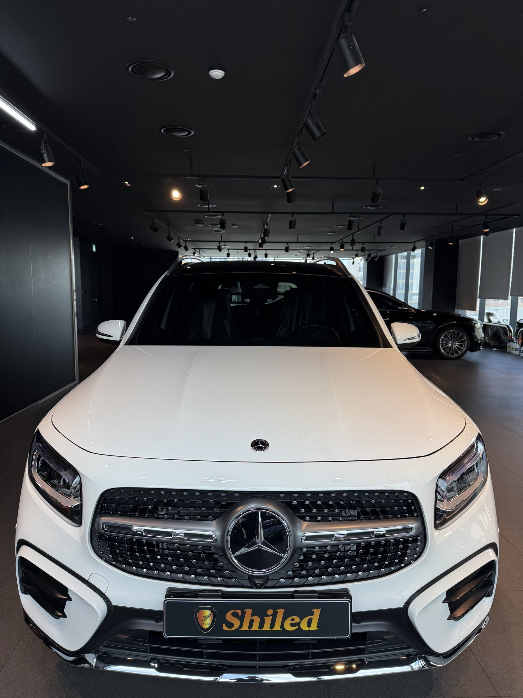
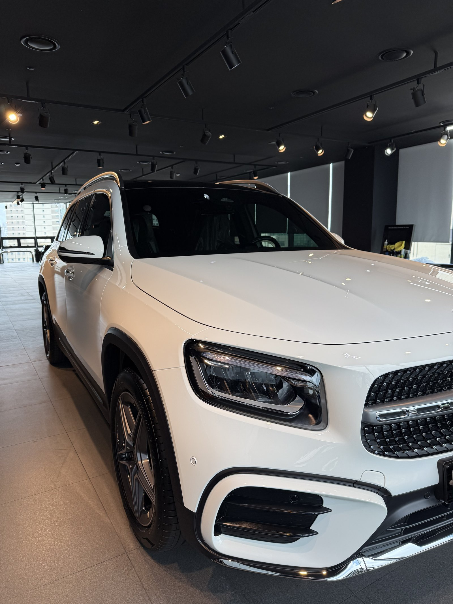
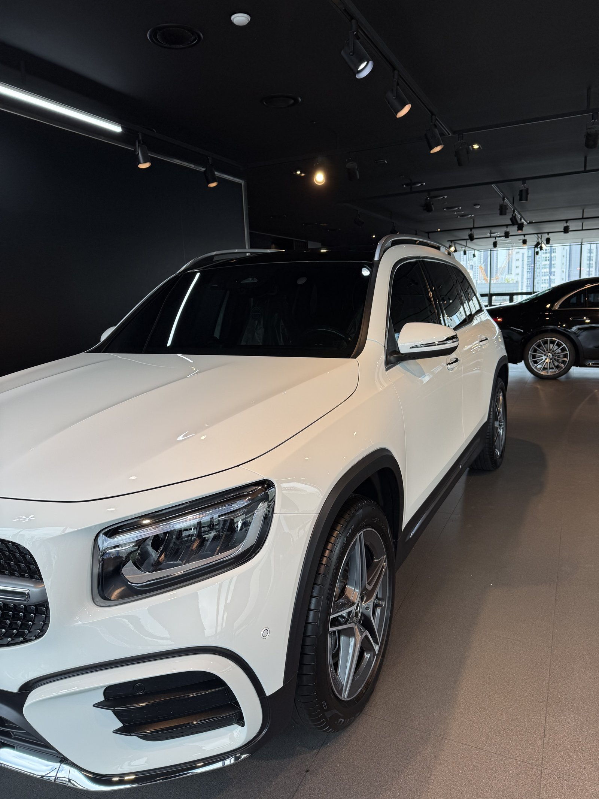
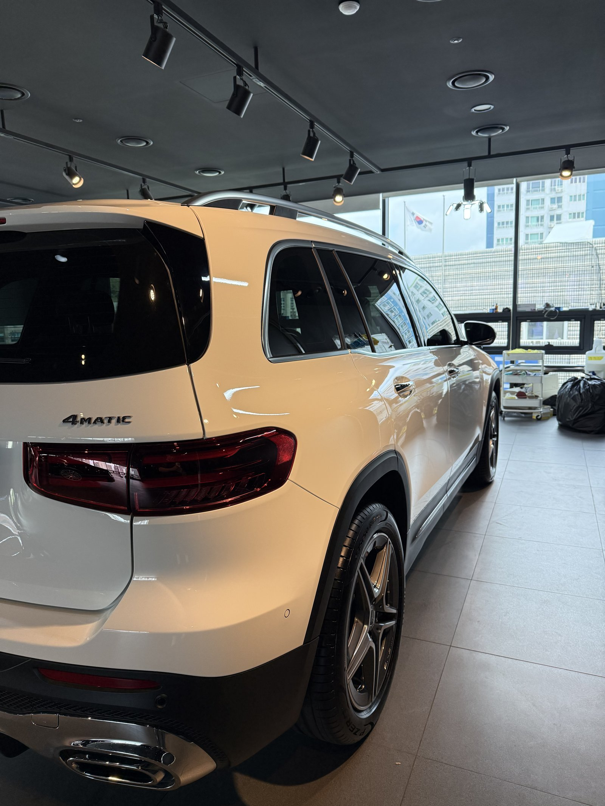
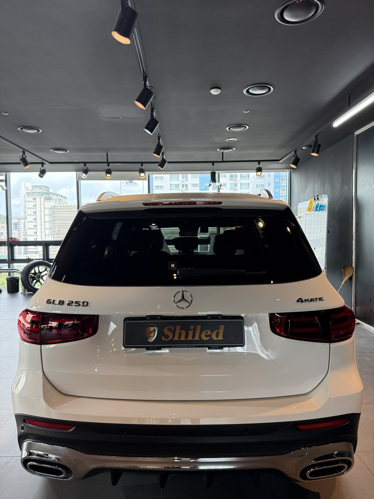
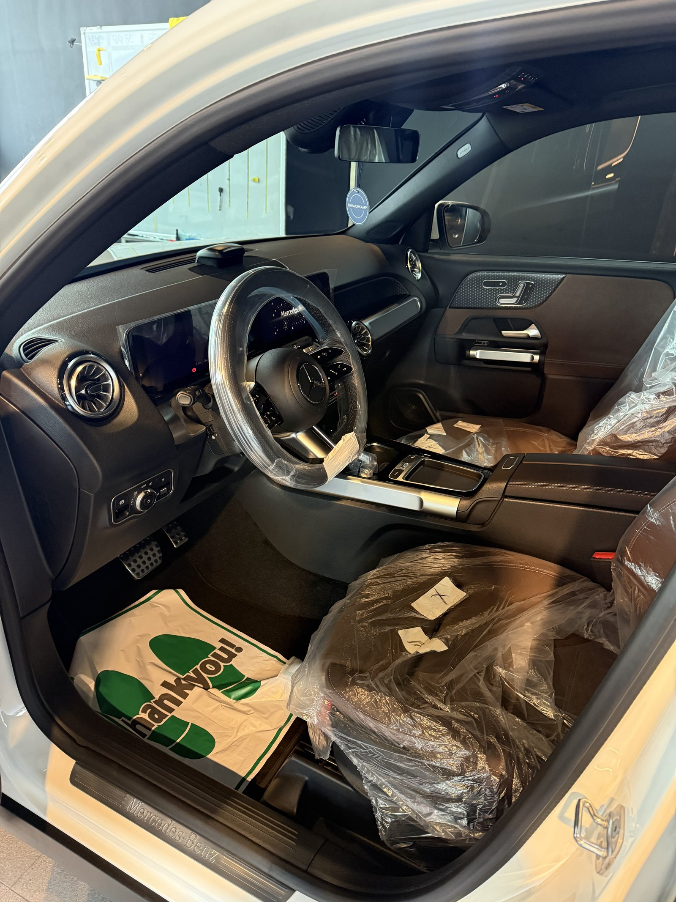
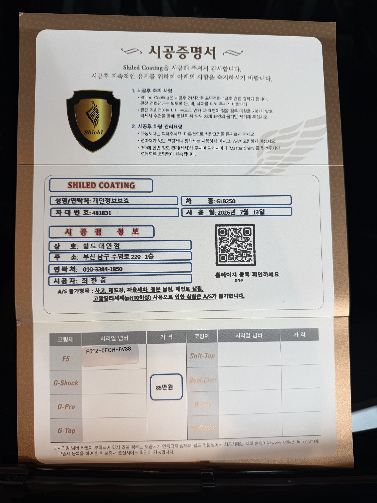

벤츠 GLB250 백색입니다. 아직 출고 전, 새 차입니다.
부산 벤츠 유리막코팅으로 이 차는 출고 전 F5 유리막코팅을 진행했습니다.

컴팩트 SUV도 출고 전 코팅을 해야 하나
차급이 작다고 필요성이 줄어드는 것은 아닙니다.
도장면이 가장 깨끗한 출고 직후에 코팅막을 올려야 이후 운행·세차로 인한 잔기스와 오염을 예방할 수 있습니다. GLB는 패밀리카로 쓰이는 경우가 많아, 초기 코팅이 이후 유지 관리 부담을 크게 줄여줍니다.

백색 GLB250에 왜 F5인가
F5는 색감 깊이를 끌어올려 글로시함을 극대화하는 코팅입니다.
화이트 특유의 맑은 색감 위에 또렷한 광택을 더해줍니다. 쇼룸 조명이 도장면 위로 선명하게 흐르는 것도 F5로 올린 광택 덕분입니다. 코팅제는 대표가 화학공학 전공으로 직접 개발·제조한 제품입니다.

기술자의 팁
신차라고 바로 코팅을 올리지 않습니다. 운송·보관 중 묻은 미세 오염을 디테일링 세차와 탈지로 걷어낸 뒤에 올립니다. 깨끗한 바탕 위에 올려야 코팅이 제대로 밀착합니다.


외부만이 아니라 안까지
출고 전 차량은 안팎 컨디션을 함께 정리합니다.
실내는 아직 시트에 보호 커버가 씌워진 신차 그대로입니다. 외부 도장은 F5로 윤기를 잡고, 인도까지 깨끗한 상태로 관리합니다.

시공증명서를 함께 드립니다
모든 시공 차량에 시공증명서를 드립니다.
차종·시공일·코팅제 시리얼 번호가 적혀 있고, 홈페이지에 등록해 보증을 받으실 수 있습니다. 이 차는 F5 코팅으로 기록돼 있습니다.

차종·시공일·코팅제 시리얼이 기재된 시공증명서
자주 묻는 질문
Q. 컴팩트 SUV도 출고 전에 코팅을 해야 하나요?
A. 필요합니다. 차급과 무관하게 출고 직후 도장면이 가장 깨끗할 때 코팅막을 올려야 잔기스와 오염을 예방할 수 있습니다.
Q. 백색 GLB250에는 어떤 코팅이 좋나요?
A. 이 차는 F5로 진행했습니다. 색감 깊이를 끌어올려 글로시함을 극대화해, 화이트 특유의 맑은 색감 위에 또렷한 광택을 더해줍니다.
Q. 신차코팅도 전처리를 하나요?
A. 합니다. 신차라도 운송·보관 중 미세 오염이 묻습니다. 디테일링 세차와 탈지로 표면을 정리한 뒤 코팅을 올려야 제대로 밀착합니다.
Q. 쉴드광택 위치와 예약은 어떻게 하나요?
A. 부산 남구 유엔로220 1F 쉴드광택입니다. 예약·상담은 010-3384-1850, 대표 최한중이 직접 상담하고 책임 시공합니다.
새 차일수록 시작점이 다릅니다. 가장 깨끗할 때 입혀두십시오.
제품을 직접 만드는 사람이 직접 시공합니다.
부산에서 벤츠 신차코팅을 고민 중이시면 편하게 연락 주십시오.
어떤 차를 타냐보다 어떻게 타냐가 중요합니다~!
📞 010-3384-1850 견적 문의쉴드광택 · 부산 남구 유엔로220 1F · 대표 최한중